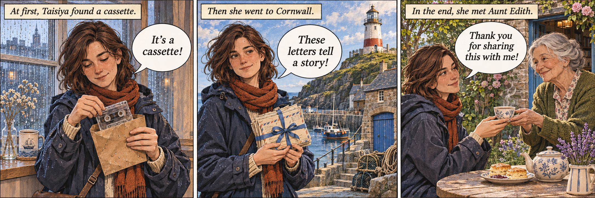
A cassette from Cornwall. A train, a taxi, a bakery, a lighthouse. Fifteen chapters that hide every pronunciation rule you've learned — p/t/k aspiration, schwa, magic e, bossy r, connected speech, intonation. By the last page you'll speak like you grew up in Mousehole.
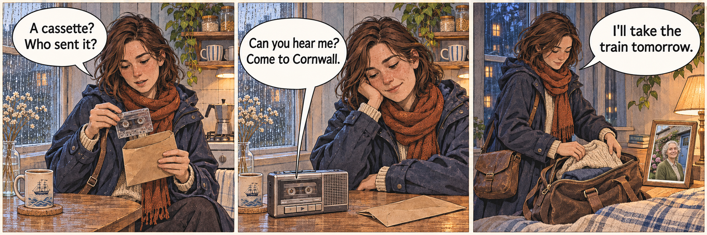
Long vowels hold the sound for an extra beat — feel is slower than fill, pool is slower than pull. Yes/no questions climb at the end: the voice jumps UP on the last stressed word.
/iː/ — Edith, cheese, sleeve, means/uː/ — Mousehole, blue, soon, loose/ɑː/ — Aunt, past, dark, carved/ɔː/ — Cornwall, four, bought, taughtPress 🔊, listen twice, then record yourself. Hold each highlighted vowel for two beats — seeee, not sih.
Hear the pair, then record the right word out loud. The model will reveal only after you record.
Base line → three moods. Click a tile → record. Yes/no climbs UP at the end. Statement falls DOWN.
The cassette plays. You reply with a full sentence, using the stem. Hold long vowels. End yes/no with ↗.
Press record. Speak for 30 seconds. Must include four long vowels from the list below.
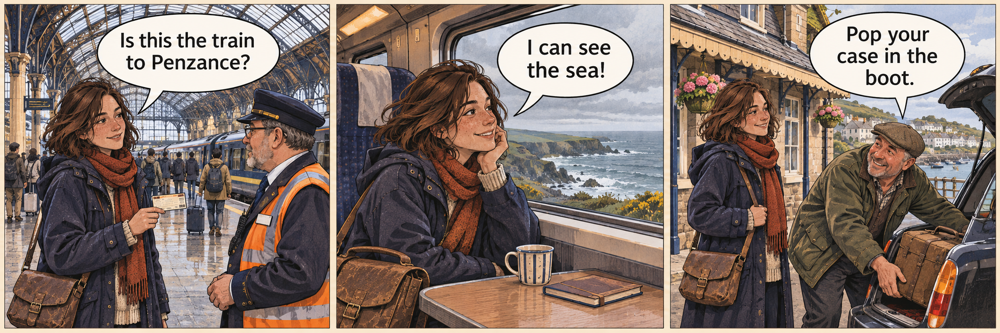
One syllable BITES in every English word — louder, longer, higher. The rest hide. And every long vowel beats its short twin by a whole beat.
CARR·iage · PLAT·form · PEN·zance · PAD·ding·tonListen, then record. Keep yellow short and snappy. Stretch green for two beats.
Press 🔊 — hear the model. Then record yourself. Capital letters show where the stress BITES.
Press record. Ask the station master three yes/no questions in a row, each ending with ↗.
Same words, different BITING syllable, different meaning. Record both.
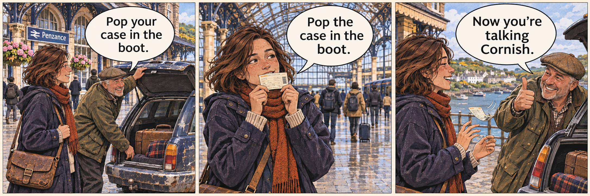
Aspirated stops — at the start of a stressed syllable, /p/ /t/ /k/ release a puff of air. English ears without the puff hear /b/ /d/ /g/ instead. Hold a piece of paper in front of your lips — it should flutter.
Really tear a corner of paper off, hold it 3 cm from your lips, and record. Watch the paper.
Without the puff, English hears B / D / G. Record the LEFT (aspirated) word each time.
Three turns. Each reply must contain at least two aspirated stops at the start of stressed syllables.
Say each three times, faster and faster. The paper should flutter every time.
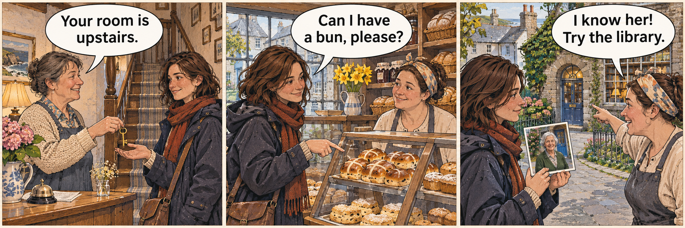
Magic e at the end of a word reaches back and lifts the vowel: mat → mate, bit → bite, not → note, cut → cute. Cornish place names hide letters you'd never guess: Mousehole is said "Mow-zul", Fowey is "Foy", Launceston is "Lawn-stun".
a_e → mate, lane, late, gate (lift to /eɪ/)i_e → bite, line, mile, Pine (lift to /aɪ/)o_e → note, hope, home, rose (lift to /əʊ/)u_e → cute, tune, June, use (lift to /juː/ or /uː/)Short vowel on the left, long vowel on the right. Hold the right one for two beats.
Written vs spoken. The letter in RED is silent or weak.
Reply with magic-e words and at least one Cornish place name said the Cornish way.
Add an e. Lift the vowel. Make a sentence about the B&B.
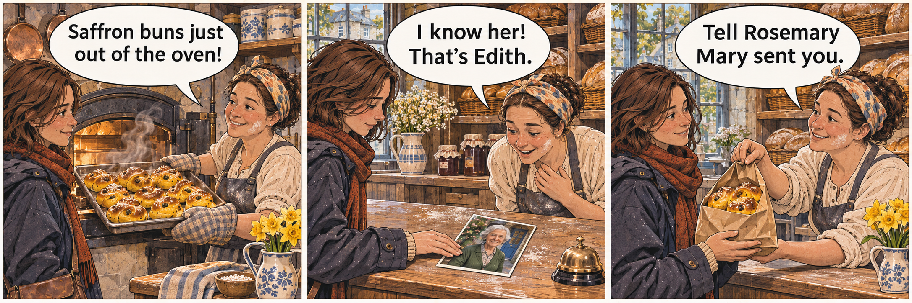
Vowel teams are two vowels working as one sound: ee = /iː/, ea = /iː/ or /e/, oa = /əʊ/, oo = /uː/ or /ʊ/, ai/ay = /eɪ/, oi/oy = /ɔɪ/, ou/ow = /aʊ/.
Press ▶. Listen ONCE for gist → answer the first two Qs. Then listen again for detail.
Don't try to understand every word yet. Just get the feeling.
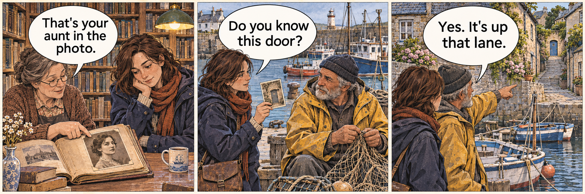
Schwa /ə/ is the laziest vowel in English — a tiny "uh" in every weak syllable. Content words keep their vowels. Function words (a, the, of, for, to, can, have) reduce to schwa.
Count every weak to, of, a, the you hear — but don't worry about full meaning yet.
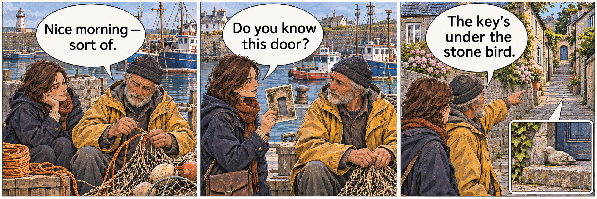
Bossy r grabs the vowel before it: car, her, bird, sort, turn. In British English the r itself is usually silent — the vowel is long and dark. /t/ between consonants drops: las' night, bes' friend, soft spoken.
Notice: every /t/ at the end of a word disappears before the next consonant.
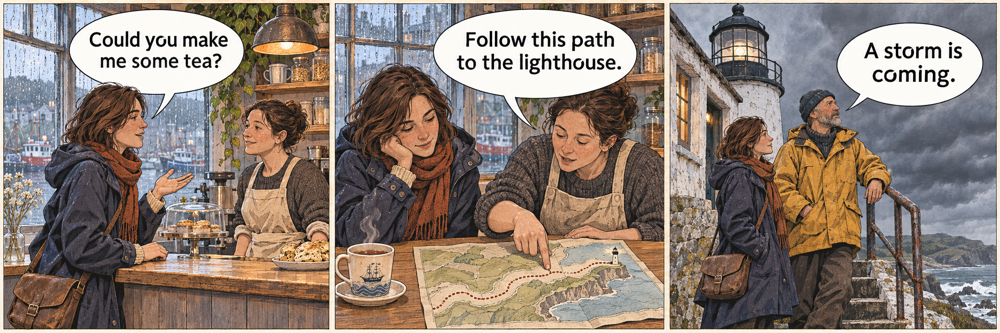
Palatalization: when t/d meets you/your, they melt. Could you → Couldja, Did you → Didja, Would you → Wouldja, Don't you → Doncha. -tion / -sion / -cious all say /ʃən/ — station, decision, delicious.
Listen for every "Wouldja / Didja / Doncha" — palatalization in action.
Assimilation n → m: when n meets p, b, or m, the n turns into m. pumpkin pie → pumpkim pie, ten boys → tem boys, can't buy → cam' buy.
Count every "tem", "pumpkim", "cam play" — n→m in action.
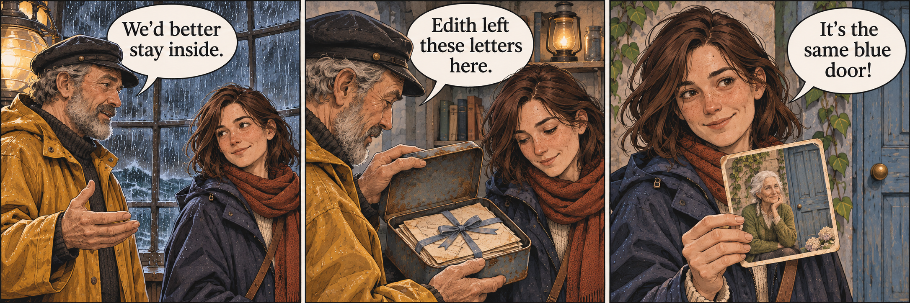
Linking: when a word ends in a consonant and the next begins with a vowel, they GLUE together. an apple → an_apple, pick it up → pick_it_up, get on → get_on. -ed endings: /t/ after voiceless (walked, stopped), /d/ after voiced (loved, called), /ɪd/ after t/d (wanted, decided).
Listen for every -ed verb. Which ending do you hear most often?
Silent letters are letters you WRITE but don't SAY: knife, hour, lamb, castle, island, write, thought. y → i: consonant + y → add -es or -ed, change y to i: study → studied, cry → cries, baby → babies.
Listen for silent letters she skips (hour, island, castle, thought).
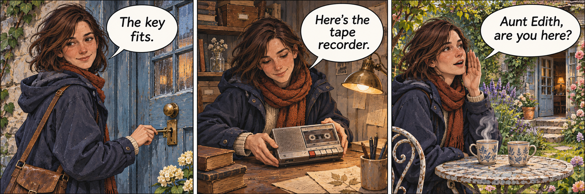
Doubling: short-vowel + single-consonant verbs double before -ing / -ed. stop → stopping, sit → sitting, run → running. Silent-e drop: drop the e before -ing / -ed. make → making, come → coming, write → writing.
Count every -ing verb (sitting, making, coming, writing).
-s endings: /s/ after voiceless (cats, cakes, hopes), /z/ after voiced (dogs, trees, loves), /ɪz/ after sibilants (roses, buses, washes).
Count -s endings. How many /s/ vs /z/ vs /ɪz/ do you hear?
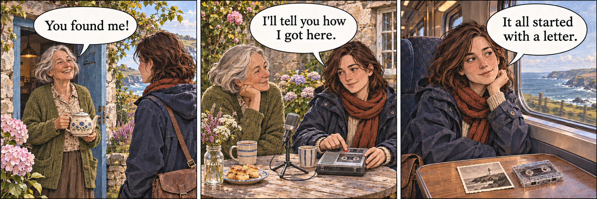
English is a rhythm language. Content words (nouns, main verbs, adjectives, adverbs) are STRONG, LONG, HIGH. Function words (articles, prepositions, auxiliaries, pronouns) are weak and squeezed into the gaps. The rhythm is like tapping: STRONG — weak — weak — STRONG — weak — STRONG.
Listen for the rhythm — count the STRONG beats per sentence.
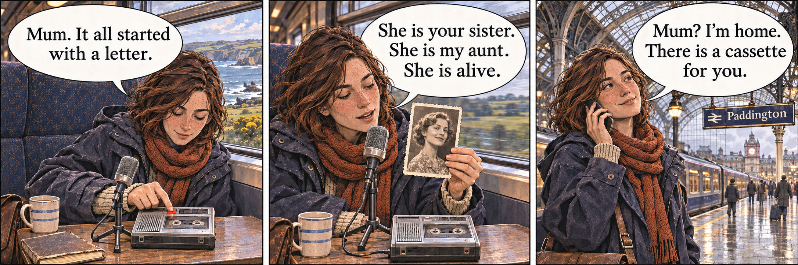
Taisiya is on the train home. She records the whole journey for her mother. You are going to do the same — but YOUR version, in three stages: 1 minute, 2 minutes, 3 minutes. Each stage adds more rules.